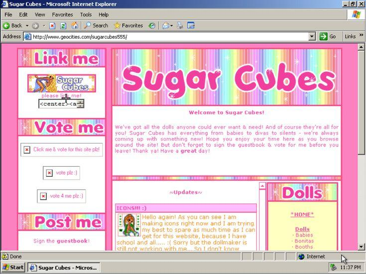
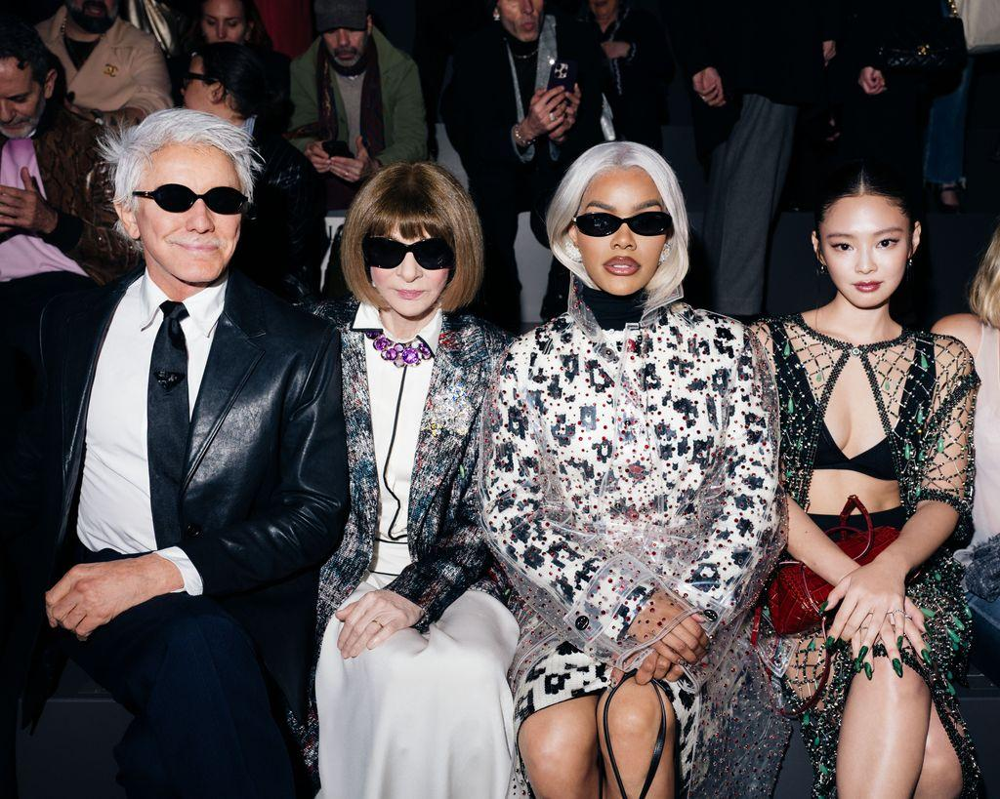

My last firts post!
Quem eu sou? Isso é um segredo que eu nunca vou contar... mas os segredos dos outros? Esses eu entrego todos. Sentou confortavelmente? A temporada de fofocas está oficialmente aberta.
Por: A garota do blog.
Welcome, girls! Aqui vai ser seu novo vício diário...XOXO

Quem eu sou? Isso é um segredo que eu nunca vou contar... mas os segredos dos outros? Esses eu entrego todos. Sentou confortavelmente? A temporada de fofocas está oficialmente aberta.
Por: A garota do blog.

Meninas, preparem o chá, porque o mundo da moda nunca é tão elegante quanto parece.☕ Por trás dos desfiles luxuosos, das bolsas que custam o preço de um carro e dos looks perfeitamente calculados, existe uma disputa silenciosa por algo muito mais valioso que dinheiro: quem dita as tendências e quem apenas corre atrás delas. Afinal, quando duas celebridades aparecem usando peças parecidas, começa a investigação: foi coincidência, inspiração ou uma tentativa de roubar os holofotes? E não pensem que a guerra acontece apenas entre famosas! Marcas de luxo também disputam espaço, atenção e o título de queridinha da temporada. Uma campanha viral, uma bolsa esgotada ou um look inesperado podem transformar uma marca em assunto mundial da noite para o dia. Mas aqui vai a verdadeira pergunta: quem realmente cria a tendência? a grife, a celebridade ou as pessoas que decidem o que merece viralizar? Porque, convenhamos, no universo fashion, às vezes uma foto vale mais que mil contratos, e um look pode dizer muito mais do que uma entrevista inteira. XOXO 💋
Por: A garota do blog.